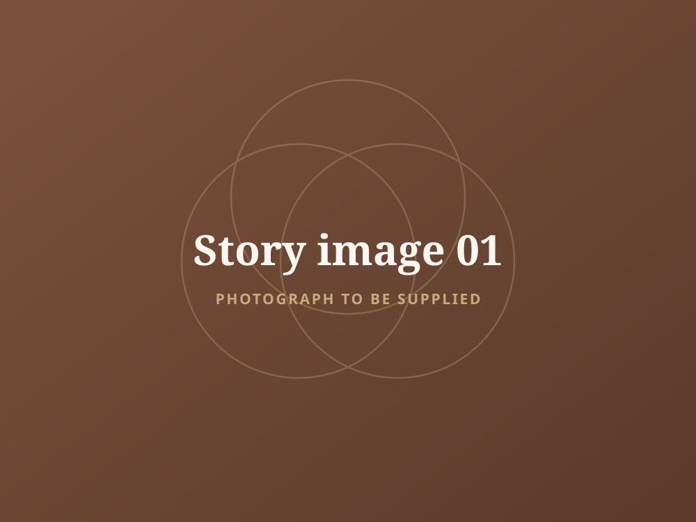
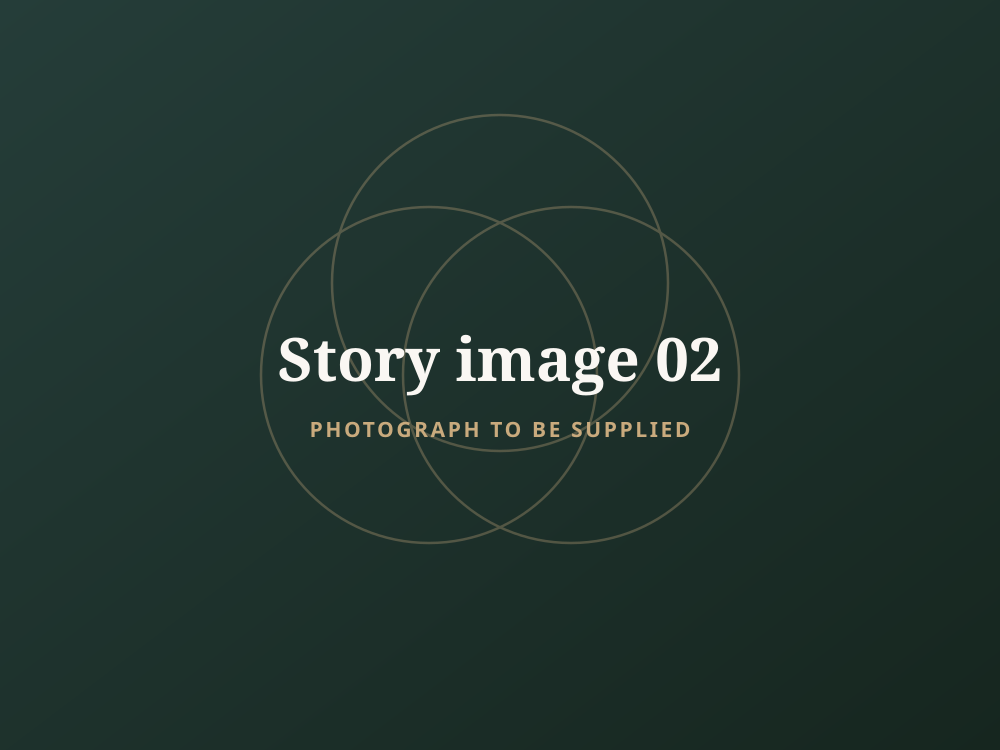
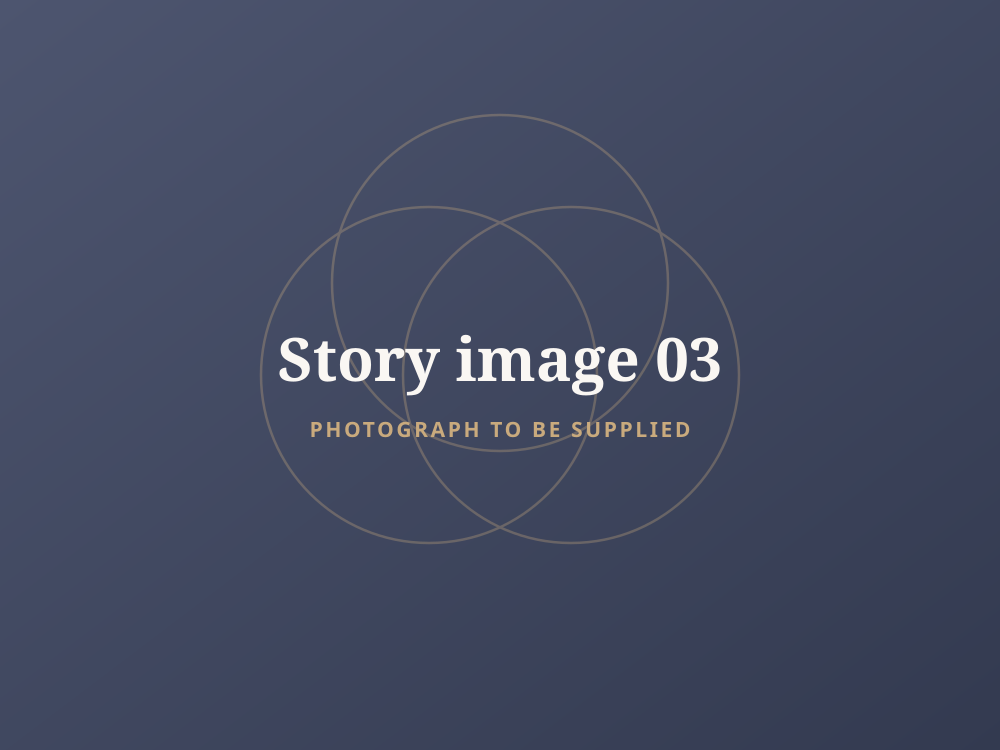
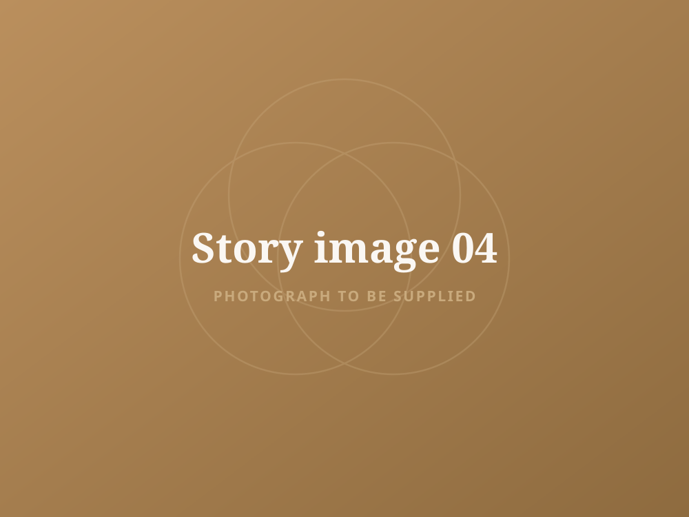

In her own words
My story
I’m really glad you found your way here.
My life has not run in a straight line. There have been setbacks, and there have been relationships that were hard to be in and harder to leave. I grew up around a parental relationship that was deeply disconnected, and that shaped what I understood love and closeness to be long before I had the words for any of it.
Those years, and the ones that followed, became part of the foundation for the work I do now. Not because everything resolved neatly, but because I learned what it takes to rebuild confidence, communication and self-worth after they have been worn down.
The whole of it is here if you would like to read it. If not, that is completely fine too.
The full account is being prepared for publication and will appear here.




If any of this feels familiar, there is no rush and no pressure. Take whichever next step feels right.